Best Luxurious Hotels
Australia
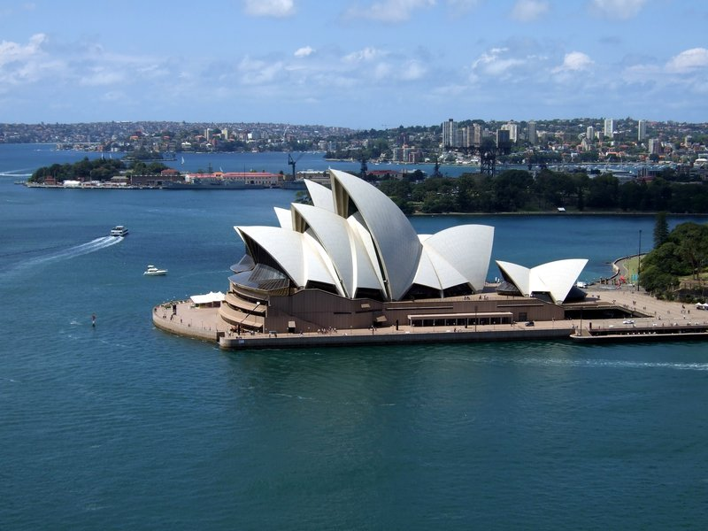
Park Hyatt Sydney
Sydney, Australia
155 rooms and suites on the edge of Sydney Cove, built so low to the ground that every harbour-facing room sits at eye level with the Opera House shells — not above them, not below, directly across the water. The rooftop pool mirrors the same view. One of the few hotels in the world where the landmark outside the window genuinely improves with proximity rather than distance.
Austria
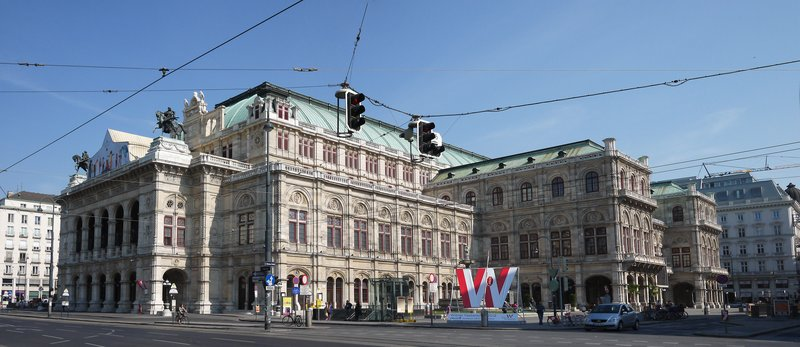
Hotel Sacher Wien
Vienna, Austria
Directly opposite the Vienna State Opera and in the same family since Franz Sacher's son Eduard opened it in 1876, with 152 rooms furnished in deep reds and dark wood. The Sachertorte was invented here and is still made exclusively for the hotel under a legally protected recipe. The Rotes Bar is one of the most beautifully preserved red-lacquer rooms in any European hotel.
Bhutan

Amankora
Across Bhutan
Five private lodges across the Paro, Thimphu, Punakha, Gangtey, and Bumthang valleys — each capped at 24 guests. The standard journey moves east across the country over seven to ten days, with guided access to Tiger's Nest, Punakha Dzong, and restricted monasteries that require government permits Aman handles entirely. Bhutan's high daily fee effectively makes this the most regulated luxury travel experience in the world.
Brazil
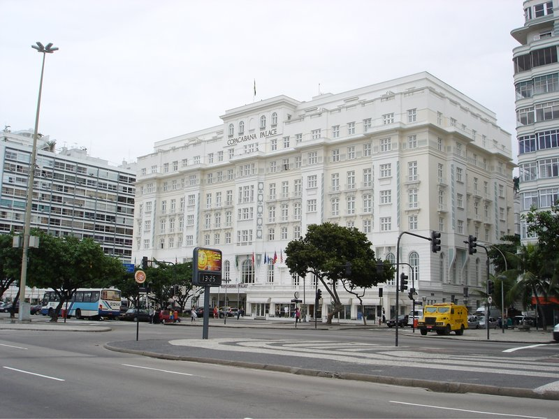
Belmond Copacabana Palace
Rio de Janeiro, Brazil
Designed by French architect Joseph Gire and modeled after the Carlton in Cannes, this white neoclassical facade has faced Copacabana Beach since 1923. 243 rooms and suites, a semi-Olympic pool, and the Michelin-starred MEE restaurant. Built at the request of a Brazilian president to host centenary exposition guests, now owned by Belmond (LVMH).
France
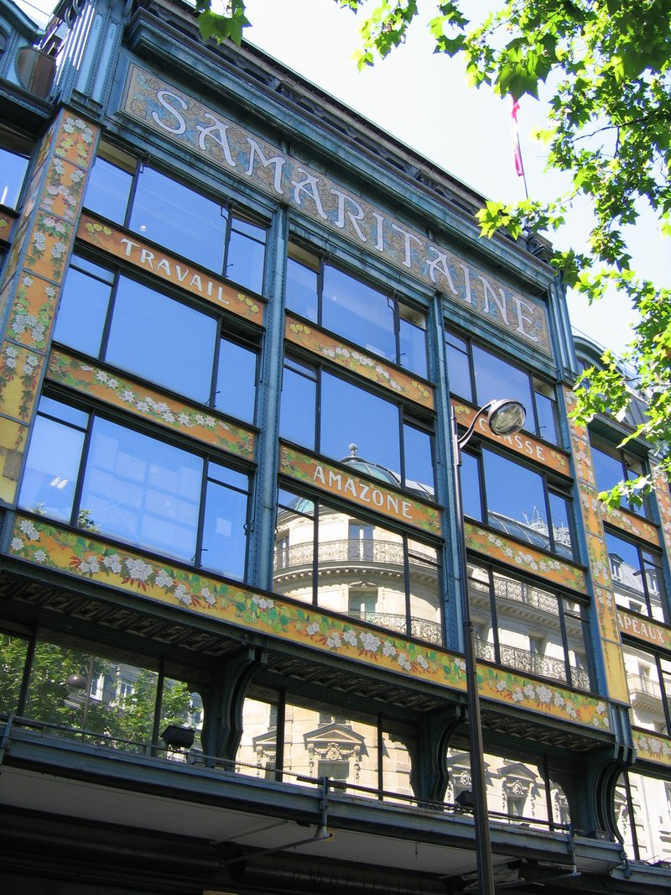
Cheval Blanc Paris
Paris, France
LVMH spent years turning the old La Samaritaine department store into its Paris flagship — a butler assigned to every room, Seine views from nearly all of them. Arnaud Donckele runs the rooftop restaurant, Le Tout-Paris, which holds three Michelin stars, and the Dior Spa two floors down has a 30-metre pool lit entirely from below.
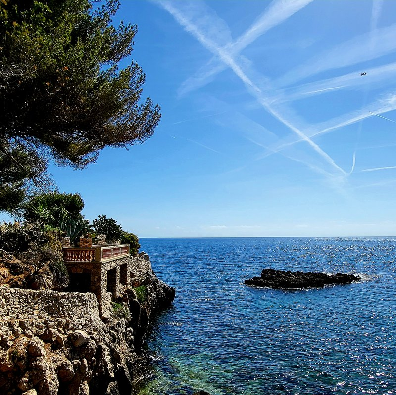
Hôtel du Cap-Eden-Roc
Cap d'Antibes, France
A private villa turned hotel in 1889 on 22 acres of pine-shaded gardens at the tip of Cap d'Antibes, with a seawater pool blasted into the rocks at Eden-Roc. A Riviera institution since the 1920s, when Gerald and Sara Murphy's summer-long stay here inspired F. Scott Fitzgerald's Tender Is the Night.
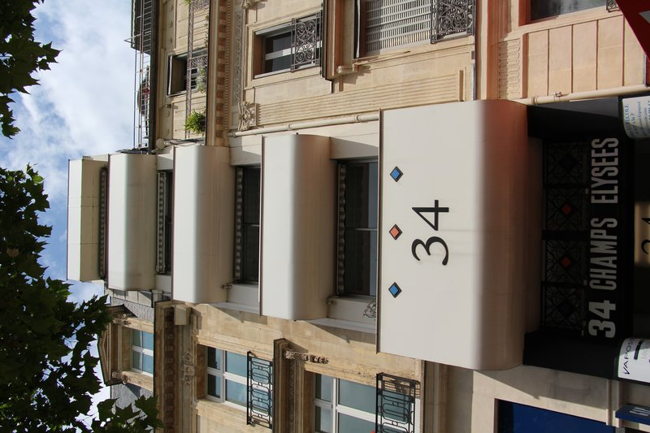
La Réserve Paris
Paris, France
Behind an unmarked courtyard gate near the Champs-Élysées, this 40-room Haussmann mansion has no public lobby and no sign — you're either expected or you're not. Jérôme Banctel's restaurant Le Gabriel holds two Michelin stars, and the Nescens spa in the basement runs Swiss medical-grade longevity programs.
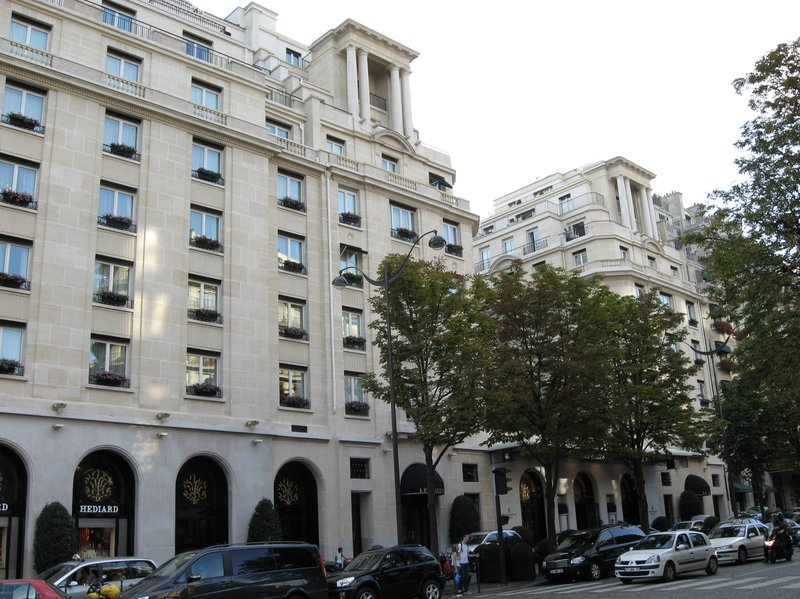
Four Seasons Hotel George V
Paris, France
An Art Deco landmark steps from the Champs-Élysées, opened in 1928 and now holding five Michelin stars across three restaurants — Le Cinq (three stars), Le George and L'Orangerie (one each). Jeff Leatham's floral installations, using roughly 12,000 flowers per weekly rotation, have become as much a draw as the 244 rooms themselves.
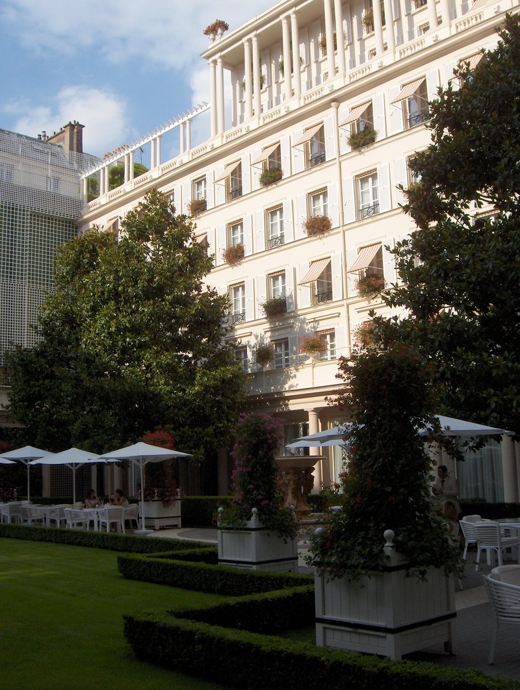
Le Bristol Paris
Paris, France
Directly across the street from the Élysée Palace on the Faubourg Saint-Honoré, with 190 rooms split between an 18th-century wing and the original 1925 building. Eric Fréchon's Epicure holds three Michelin stars. The only Paris palace hotel with a rooftop swimming pool and a large interior garden.
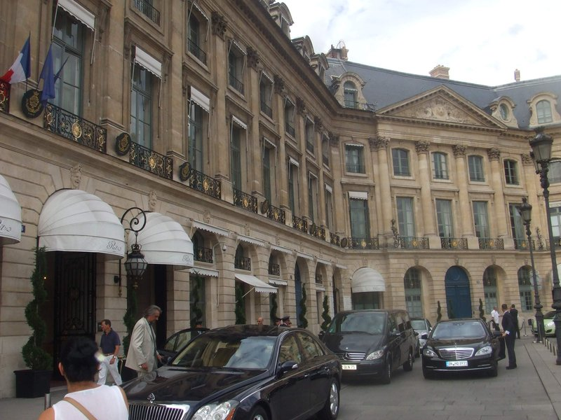
The Ritz Paris
Paris, France
César Ritz and Auguste Escoffier opened this converted 18th-century townhouse on Place Vendôme in 1898 — among the first hotels in Europe to offer en-suite bathrooms, electricity, and telephones in every room. Coco Chanel lived here for 34 years; Marcel Proust wrote much of In Search of Lost Time in his suite. A four-year renovation completed in 2016 reduced 159 rooms to 142 to allow for larger bathrooms.
Germany

Hotel Adlon Kempinski
Berlin, Germany
Rebuilt in 1997 a hundred meters from the Brandenburg Gate, on the exact footprint of the 1907 original where Kaiser Wilhelm II, Charlie Chaplin, and Greta Garbo all stayed. 385 rooms, with the Lorenz Adlon Esszimmer earning two Michelin stars. The elephant fountain in the central atrium is a replica of the one Einstein photographed here in 1921.
Greece
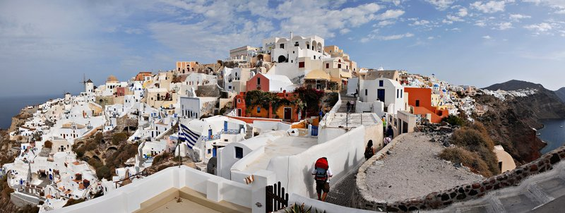
Canaves Oia Epitome
Oia, Santorini, Greece
Thirteen suites carved into the caldera cliff at Oia, each with its own private infinity pool hanging over the volcanic drop. Named World's Best Hotel by Travel + Leisure readers in recent years. Unlike most Santorini hotels that cluster rooms around a shared pool, every suite here is entirely private — the volcanic face behind acts as a natural heat sink and keeps the stone walls cool through summer.
Hong Kong
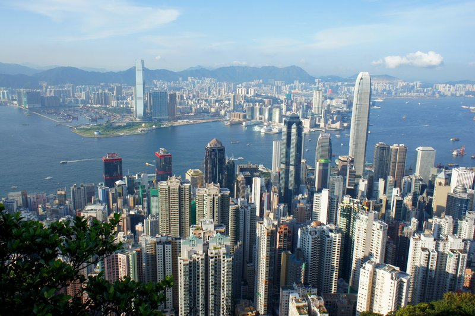
The Peninsula Hong Kong
Tsim Sha Tsui, Hong Kong
The grande dame of Hong Kong since 1928, 300 rooms overlooking Victoria Harbour, and the longest-running Rolls-Royce fleet in the world — 14 custom Phantom Extended Wheelbase models in Peninsula green that meet every arriving guest. The rooftop Felix restaurant was designed by Philippe Starck with floor-to-ceiling glass walls on three sides, and the lobby afternoon tea is one of the most reliably-attended rituals in the city.
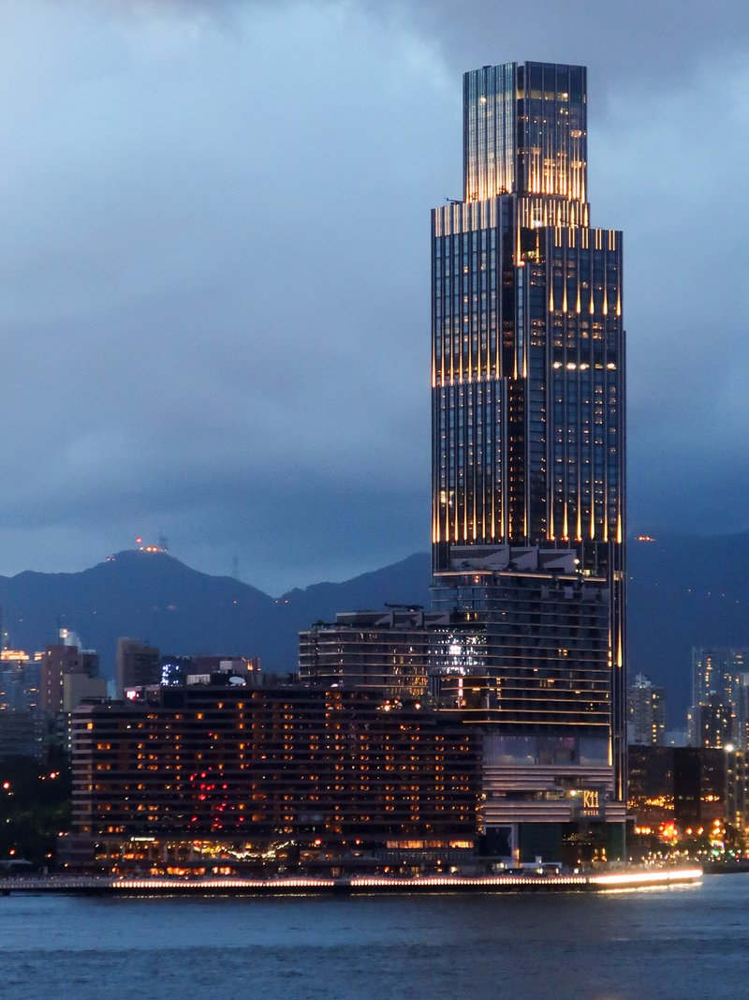
Rosewood Hong Kong
Tsim Sha Tsui, Hong Kong
413 rooms across 65 floors of the Victoria Dockside tower on the Kowloon waterfront, opened in 2019. All 91 suites come with dedicated butler service and Manor Club access on the 40th floor. The Harbour House penthouse commands rates starting at $100,000 per night.
Hungary
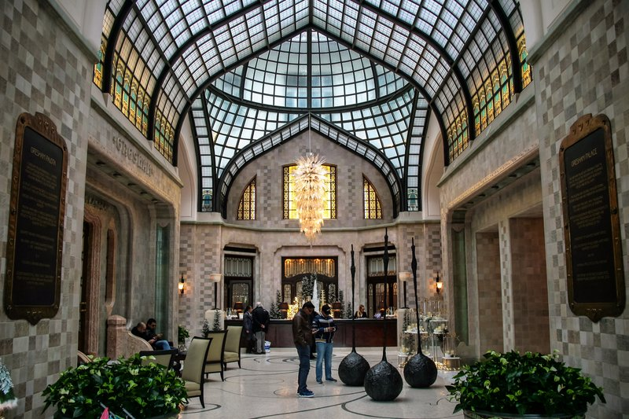
Four Seasons Gresham Palace
Budapest, Hungary
One of the finest Art Nouveau buildings in Europe, built in 1906 for the London-based Gresham Life Assurance Company and restored into 179 rooms by Four Seasons in 2004. Sits directly at the eastern end of the Chain Bridge, facing the Danube and Buda Castle. The original wrought iron, carved stone, and stained glass survived decades of neglect and wartime damage.
India
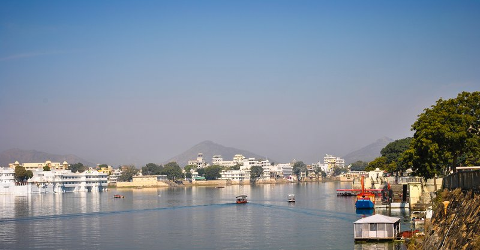
Taj Lake Palace
Udaipur, India
Built in 1746 as the summer pleasure palace of Maharana Jagat Singh II on a four-acre island in Lake Pichola, converted to a hotel in 1963. 66 rooms and suites of white marble, every one facing the water, with the City Palace visible on the ridge across the lake. The only way in or out is by hotel boat. Used as the villain's base in the James Bond film Octopussy in 1983.
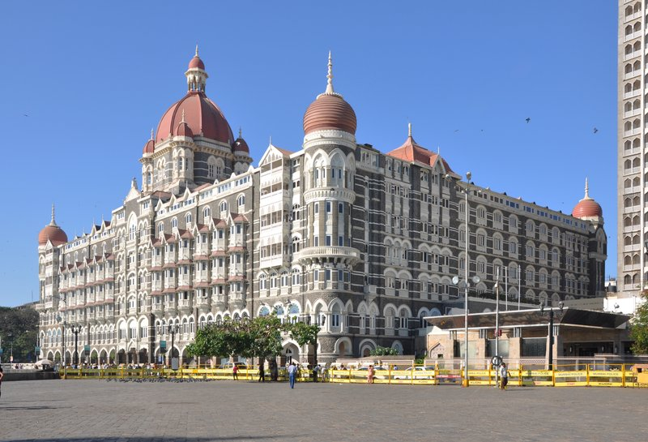
Taj Mahal Palace
Mumbai, India
285 rooms in a building that has faced the Gateway of India and the Arabian Sea since 1903, when industrialist Jamsetji Tata reportedly built it after being denied entry to a whites-only hotel in the city. The original wing's Florentine Gothic exterior — a dome, turrets, and arched windows — is among the most photographed buildings in India. Survived the 2008 Mumbai attacks and reopened 21 months later after a full restoration.
Italy
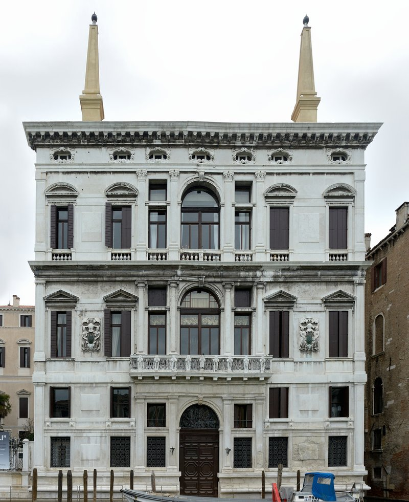
Aman Venice
Venice, Italy
Aman's Venice outpost occupies one of only eight monumental palazzos still standing on the Grand Canal, with 24 rooms wrapped around original 18th-century Tiepolo ceiling frescoes. Two private gardens back onto the water — genuinely rare in a city built wall-to-wall — and the kitchen will serve any dish, in any room, at any hour.
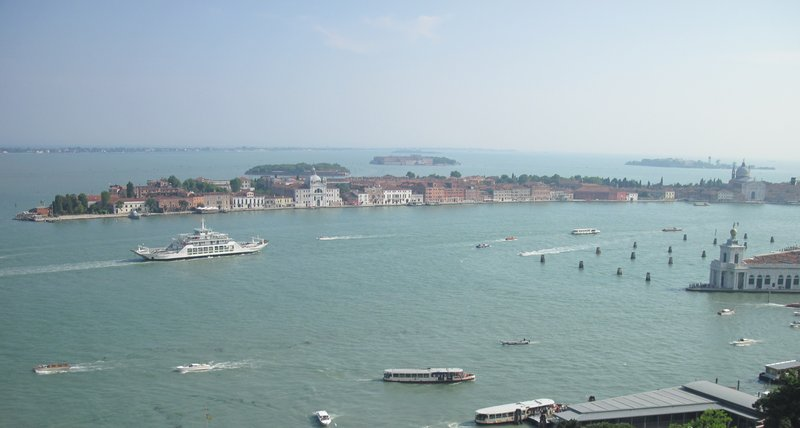
Belmond Hotel Cipriani
Giudecca, Venice, Italy
79 rooms and suites on the quiet island of Giudecca, reached from St Mark's Square by the hotel's own launch across five minutes of lagoon — the crossing alone does most of the work of leaving Venice's crowds behind. The pool, filled with heated water, is the only one of its size in the city.
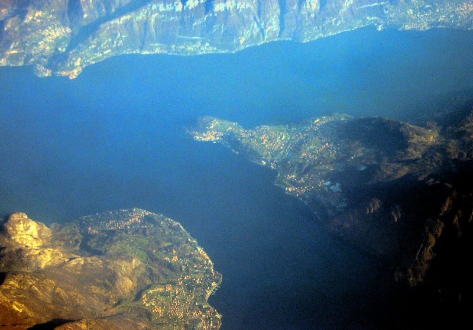
Passalacqua
Lake Como, Italy
An 18th-century villa on Lake Como, restored from a private residence into just 24 rooms, with terraced gardens that step straight down to the water and George Clooney's villa in view across the lake. Breakfast, afternoon tea and evening aperitivo all come with the room rate.
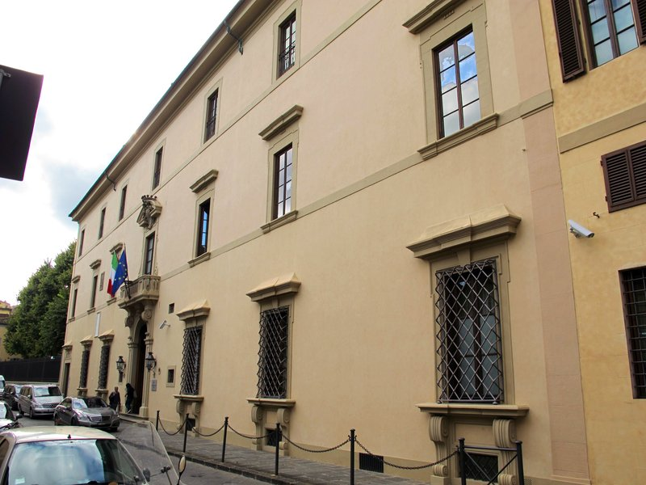
Four Seasons Hotel Firenze
Florence, Italy
116 rooms split between the 15th-century Palazzo della Gherardesca and a restored conventino, surrounded by the largest private garden in Florence — 4.5 hectares (11 acres) of centuries-old trees, a botanical path, and an outdoor pool. Named the world's best hotel in 2024 by The World's 50 Best Hotels. The garden alone is worth the room rate.
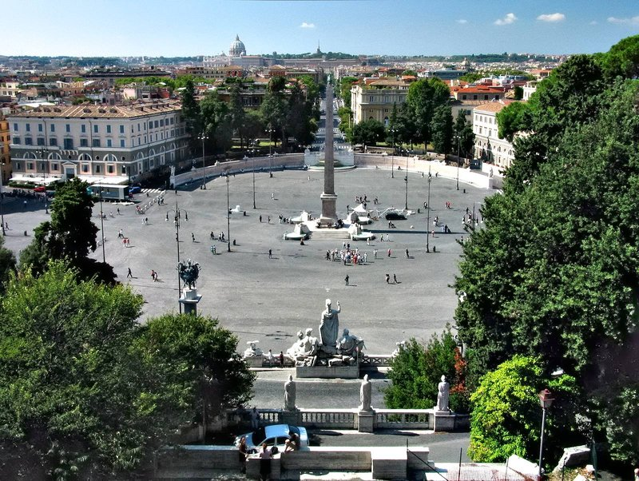
Hotel de Russie
Rome, Italy
122 rooms between Piazza del Popolo and the Spanish Steps, with terraced gardens that climb the slope of the Pincian Hill — one of the few hotels in Rome's centro storico with genuine outdoor green space. The garden restaurant, Le Jardin de Russie, seats guests under lemon trees. Picasso, Cocteau, and Stravinsky all stayed in the original 19th-century building.
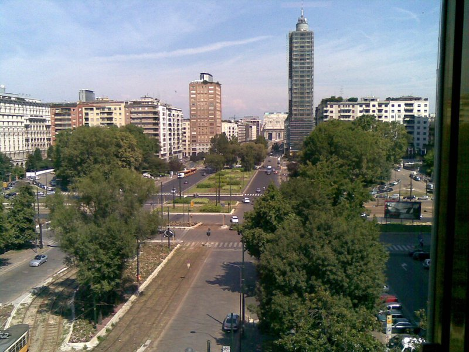
Hotel Principe di Savoia
Milan, Italy
301 rooms on Piazza della Repubblica since 1927, now part of the Dorchester Collection. The Presidential Suite on the 10th floor has its own private pool, gym, Turkish bath, and 360-degree views of the city — frequently cited as one of the most expensive suites in Europe. A major renovation is underway, with the hotel closing January 2027 for a full rebuild.
Japan
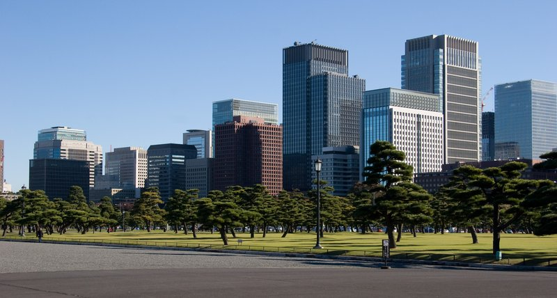
Aman Tokyo
Otemachi, Tokyo, Japan
84 suites fill the top six floors of the Otemachi office tower in central Tokyo, arranged so every one is a suite. The spa spans two full floors with onsen-style hot baths and a 30-metre pool, and Musashi, the in-house sushi counter, serves a 21-course omakase.
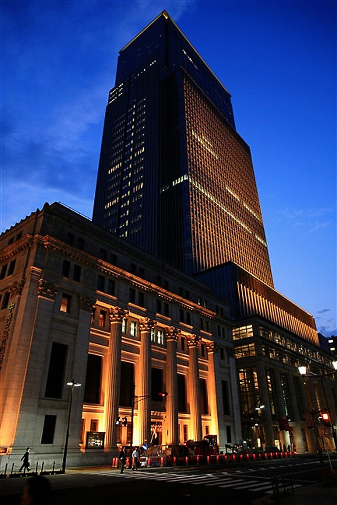
Mandarin Oriental, Tokyo
Nihonbashi, Tokyo, Japan
179 rooms across floors 30 to 36 of the Nihonbashi Mitsui Tower in Tokyo's historic merchant district, with clear-weather views of Mt. Fuji from the upper floors. The spa, spread across the 37th floor, won Asia's Leading Hotel Spa for seven consecutive years. Tapas Molecular Bar seats just eight at a single counter for a 20-course science-kitchen tasting menu.
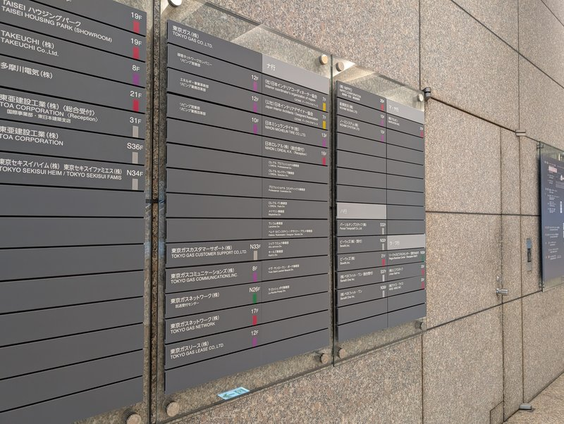
Park Hyatt Tokyo
Shinjuku, Tokyo, Japan
177 rooms on floors 39 through 52 of the Shinjuku Park Tower, known worldwide as the setting of Sofia Coppola's Lost in Translation (2003) — the New York Bar on the 52nd floor, where Bill Murray sat, is real and operating. Reopened in 2026 after a $500 million renovation that rebuilt the entire interior while preserving the views of Mt. Fuji and the Shinjuku skyline that made the film.
Maldives
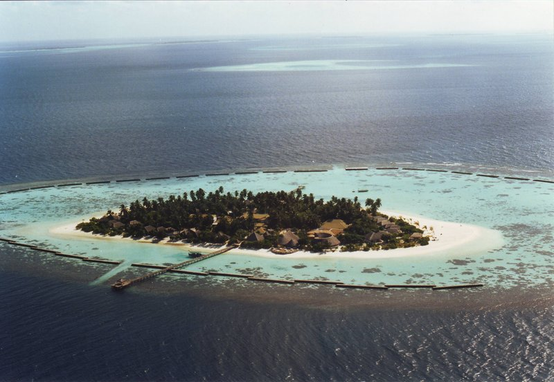
Velaa Private Island
Noonu Atoll, Maldives
47 pool villas on a private island in Noonu Atoll, 45 minutes from Malé by seaplane. The owner, Czech billionaire Jiří Šmejc, built a cheese cave, a chocolate room, and a caviar bar into the resort alongside a full 18-hole putting course. Spa treatments are co-designed by Czech F1 doctors who work with the Red Bull Racing team.
Mexico
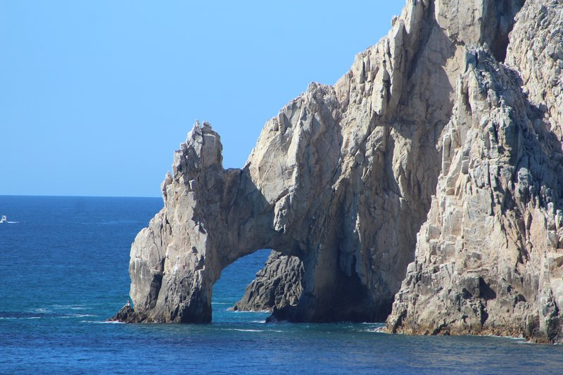
Las Ventanas al Paraíso, A Rosewood Resort
Los Cabos, Mexico
71 suites along a private stretch of Sea of Cortés, each assigned a personal butler and fitted with a wood-burning fireplace — the desert cools sharply after dark and the fire is used. A telescope on every terrace points at Scorpius, visible most of the year from Baja. The hotel operates its own tequila blending program and a saltwater aquarium stocked with species endemic to the Cortés.
Morocco
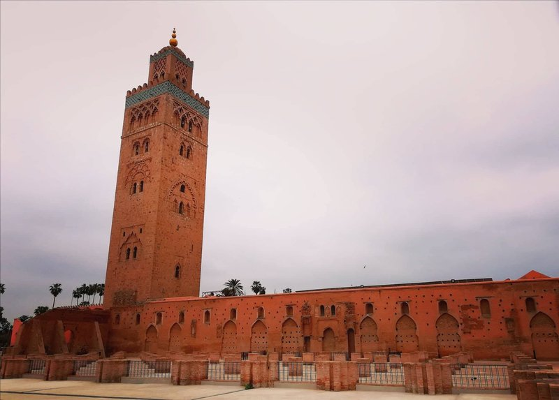
Royal Mansour Marrakech
Marrakech, Morocco
King Mohammed VI commissioned this one personally — 53 private riads, each three stories with its own rooftop terrace and plunge pool, connected by underground tunnels so staff can appear and disappear without crossing a courtyard. La Grande Table Marocaine holds two Michelin stars.
Peru
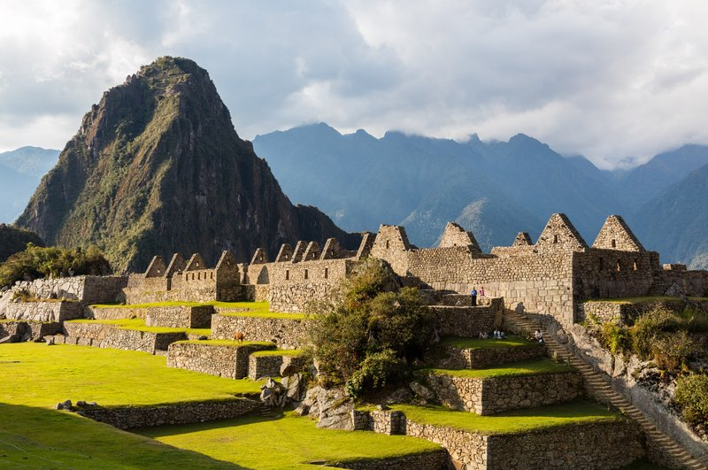
Belmond Sanctuary Lodge
Aguas Calientes, Peru
31 rooms in the only hotel permitted to operate at the entrance to Machu Picchu itself — not in Aguas Calientes below, but at the gate of the citadel. There is no road: the only way in is by train from Cusco, then a bus up the switchbacks. Guests enter the site at dawn before day-visitor access opens and stay until after the crowds leave at dusk, giving each side of the visit to themselves.
Portugal

Six Senses Douro Valley
Lamego, Portugal
A 19th-century manor house ringed by vine terraces above the Douro, converted into 57 suites with a spa that folds local grape skins, wine lees, and port into its treatment menu. The cellar hosts the Douro Boys — five of the valley's most respected small producers — for twice-weekly tastings. The Douro train line runs directly past the property; Pinhão, the most photogenic river bend in Portugal, is 15 minutes away.
Seychelles

North Island
North Island, Seychelles
Eleven villas on a private island in the Indian Ocean, each facing a different beach, with one of the most significant tortoise and seabird conservation programs of any private resort — giant tortoises wander the grounds freely. The villa interiors are built from reclaimed teak and ship timber; the only other structure on the island is a research station. Barack and Michelle Obama stayed here after his presidency ended.
Singapore
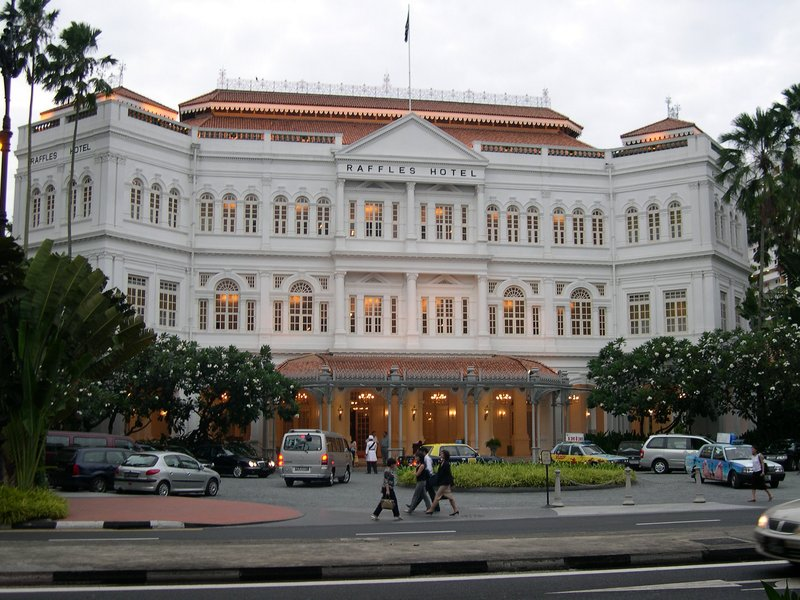
Raffles Singapore
Singapore
115 suites in the restored 1887 colonial building, each with a private parlour and bedroom — standard rooms were removed entirely in 2019. The Singapore Sling was invented at the Long Bar in 1915 by bartender Ngiam Tong Boon, and the original recipe is still used. The Lawn Butler greets every guest by name at the driveway gate. William Somerset Maugham described this as "standing for all the fables of the exotic East."
South Africa
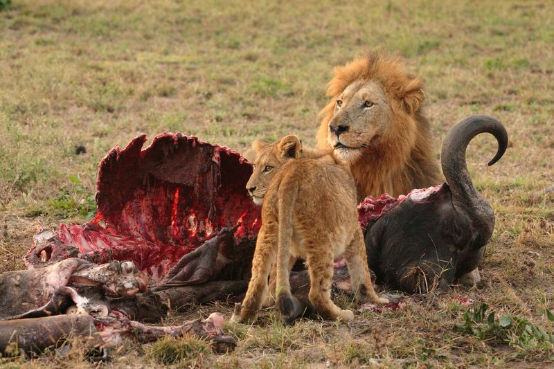
Singita Ebony Lodge
Sabi Sand, South Africa
Six suites and six cottages in the private Sabi Sand concession that borders Kruger National Park — the same unfenced ecosystem, with game drives that almost always produce lions and leopards because the reserve's density of both is among the highest in Africa. The wine cellar holds over 6,000 South African bottles and the sommelier runs tastings on request between drives. Two game drives daily are included.
Spain
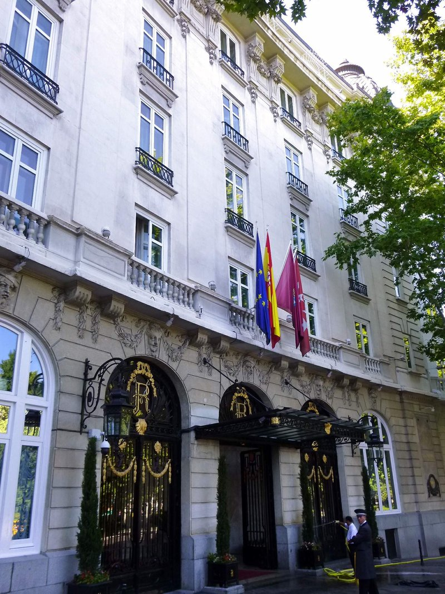
Mandarin Oriental Ritz, Madrid
Madrid, Spain
The 1910 Ritz designed by César Ritz himself, restored over three years and reopened under Mandarin Oriental in 2021 with 153 rooms. The Palm Court café sits under a 1907 Belle Époque stained-glass ceiling imported from Belgium. Quique Dacosta's Deessa restaurant holds two Michelin stars. The Prado Museum is a four-minute walk; the hotel has held an arrangement with it since opening that allows guests private access on closed days.
Switzerland
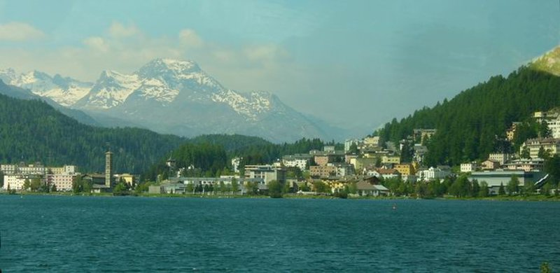
Badrutt's Palace Hotel
St. Moritz, Switzerland
Operating since 1896 and still only open in winter (December to April) and a short summer season (July to September), Badrutt's Palace is the hotel most responsible for transforming St Moritz from a spa village into a global ski resort — the Badrutt family invented the practice of hosting wealthy British guests through the winter season in the 1860s to prove the weather was survivable. The King's Club basement nightclub, opened in 1976, is credited with inventing European alpine après-ski.
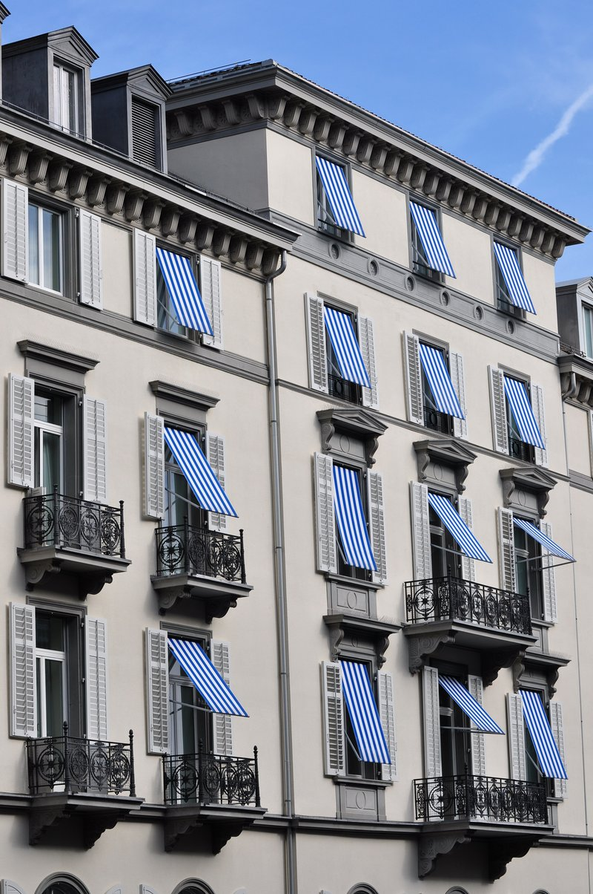
Baur au Lac
Zurich, Switzerland
119 rooms in a family-owned hotel that has operated on the same site at the head of Lake Zurich since 1844 — now in its sixth generation of the Kracht family. Richard Wagner premiered Die Walküre in the hotel's salon in 1856 to a private audience including Gottfried Semper and Franz Liszt. The private park runs down to the Schanzengraben canal and is one of the only green spaces in the Bahnhofstrasse district.
Thailand
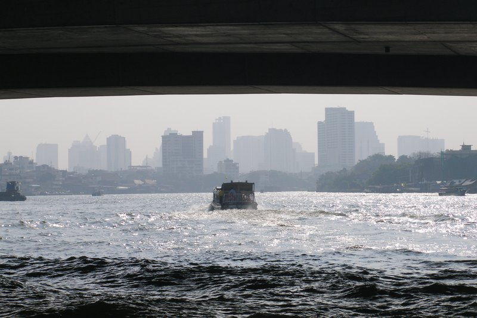
Capella Bangkok
Bangkok, Thailand
101 rooms, suites and riverfront villas along the Chao Phraya, each with a dedicated Culturist — a concierge who curates the entire stay — and a private balcony over the water. Mauro Colagreco's Côte holds two Michelin stars.
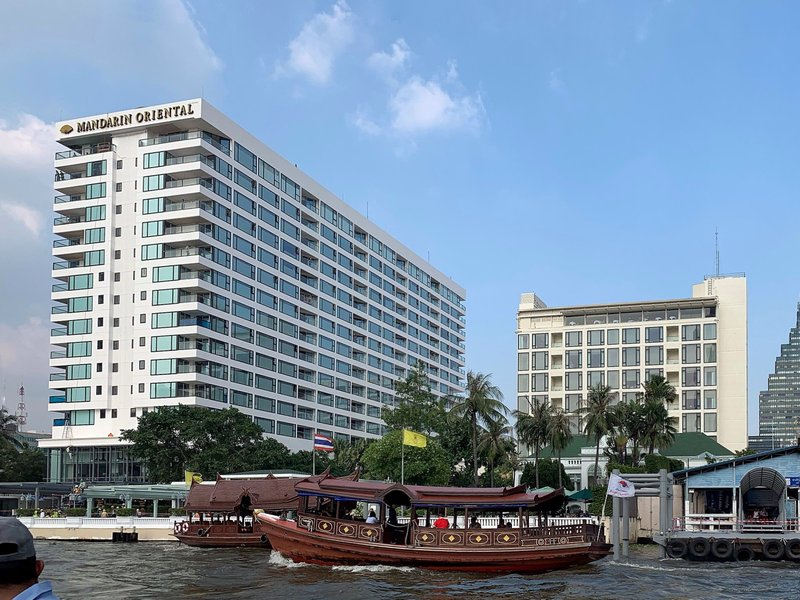
Mandarin Oriental, Bangkok
Bangkok, Thailand
Thailand's first hotel, opened in 1876 when the country was still the Kingdom of Siam, with 331 rooms along the Chao Phraya River. The Authors' Suites — named for Joseph Conrad, Somerset Maugham, and Noël Coward, all of whom stayed — face the water. The hotel's Thai cooking school is the oldest in any luxury hotel in Asia and runs daily classes in a teak house across the river, reached by the hotel's own shuttle boat.
Turkey
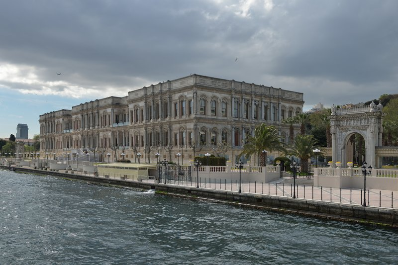
Çırağan Palace Kempinski
Istanbul, Turkey
310 rooms split between the restored 1867 Ottoman imperial palace and a modern wing, on 300 meters of private Bosphorus waterfront. The palace itself — built for Sultan Abdülaziz — houses 11 suites with original marble, parquet, and gilt ceilings. The infinity pool sits directly on the strait, at water level, with cargo ships and ferries passing within shouting distance. The former imperial ballroom hosts events under chandeliers that weighed enough to require structural reinforcement during the 2007 restoration.
United Arab Emirates
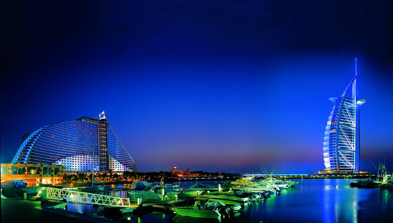
Burj Al Arab Jumeirah
Dubai, United Arab Emirates
202 duplex suites on a man-made island connected to Jumeirah Beach by a private causeway — the smallest suite spans two floors at 169 square meters. The helipad on the 28th floor doubles as a tennis court between flights. The underwater restaurant Scape is reached by a simulated submarine journey from the lobby. The building's sail silhouette is the most immediately recognizable hotel exterior in the world.
United Kingdom
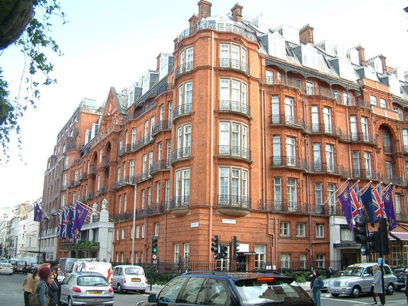
Claridge's
Mayfair, London, United Kingdom
210 rooms and suites in the Art Deco landmark on Brook Street, Mayfair, opened 1856 and in continuous operation as London's de facto royal guesthouse — 57 of its rooms were designated as Yugoslavian royal territory after World War II so the Yugoslav crown prince could be born on sovereign soil. Daniel Humm's Davies and Brook holds two Michelin stars. The Royal Suite has been used by Princess Grace of Monaco, Katharine Hepburn, and multiple heads of state for extended stays.
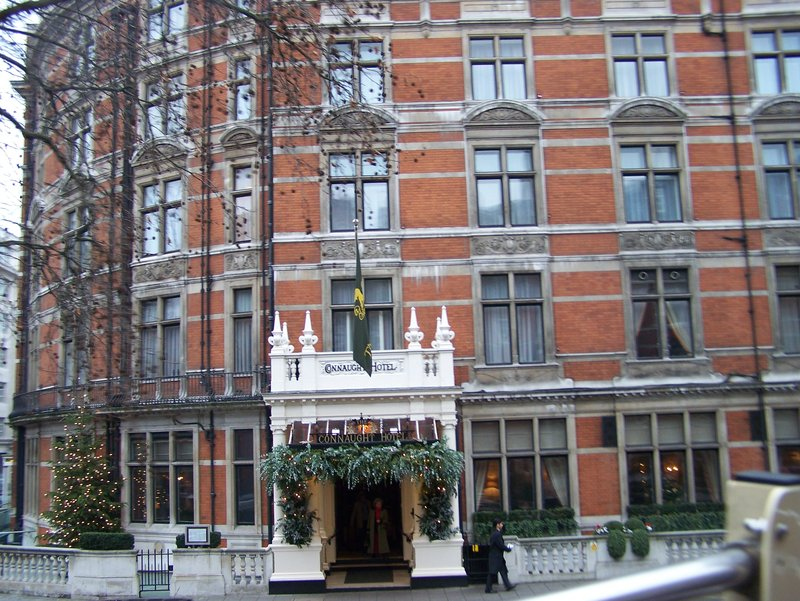
The Connaught
Mayfair, London, United Kingdom
121 rooms on Carlos Place, Mayfair, operating since 1815 — originally as the Prince of Saxe-Coburg Hotel, renamed to The Connaught in 1917 to shed the Germanic name during World War I. The Connaught Bar has been named the world's best bar four times by the World's 50 Best Bars, known for its Martini trolley ritual where the bartender mixes your drink tableside. Hélène Darroze's restaurant holds two Michelin stars.
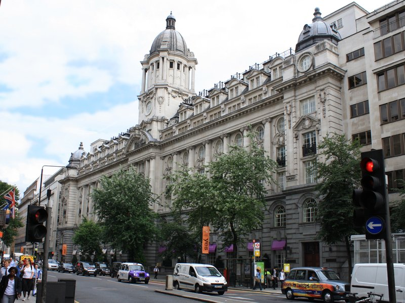
Rosewood London
Holborn, London, United Kingdom
308 rooms in the 1914 Pearl Assurance Building, a Grade II-listed Edwardian Belle Époque facade that wraps around a cobblestoned courtyard off High Holborn. Scarfes Bar — named for the caricaturist Gerald Scarfe, whose original drawings line the walls — is consistently ranked among London's best hotel bars. The Grand Manor House wing has its own private entrance, kitchen, and rooftop terrace.
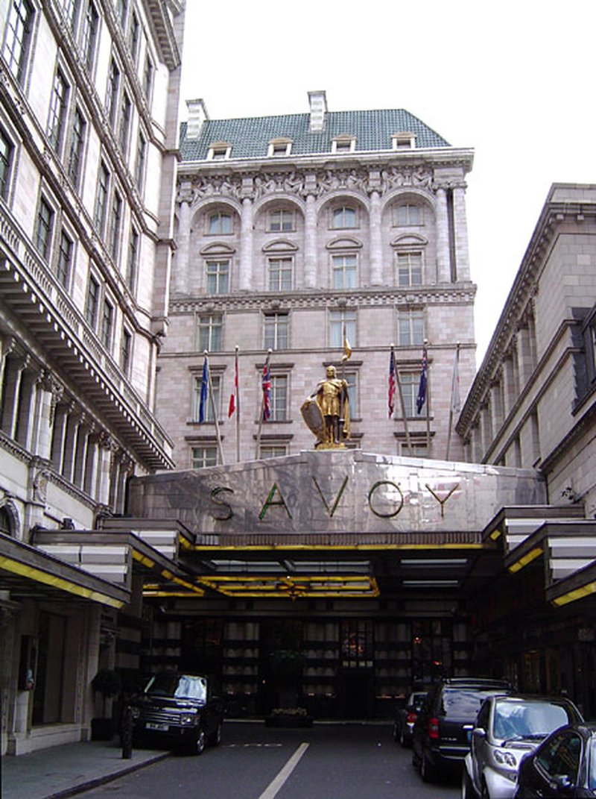
The Savoy
Strand, London, United Kingdom
267 rooms on the Strand since 1889, built by Richard D'Oyly Carte with profits from Gilbert and Sullivan operas performed at the adjacent Savoy Theatre. The hotel's forecourt is the only road in London where traffic drives on the right — engineered so cab passengers could step out curbside at the entrance. Kaspar, a two-foot-tall carved black cat, sits at any table of 13 as a permanent 14th guest — a tradition since 1927.
United States
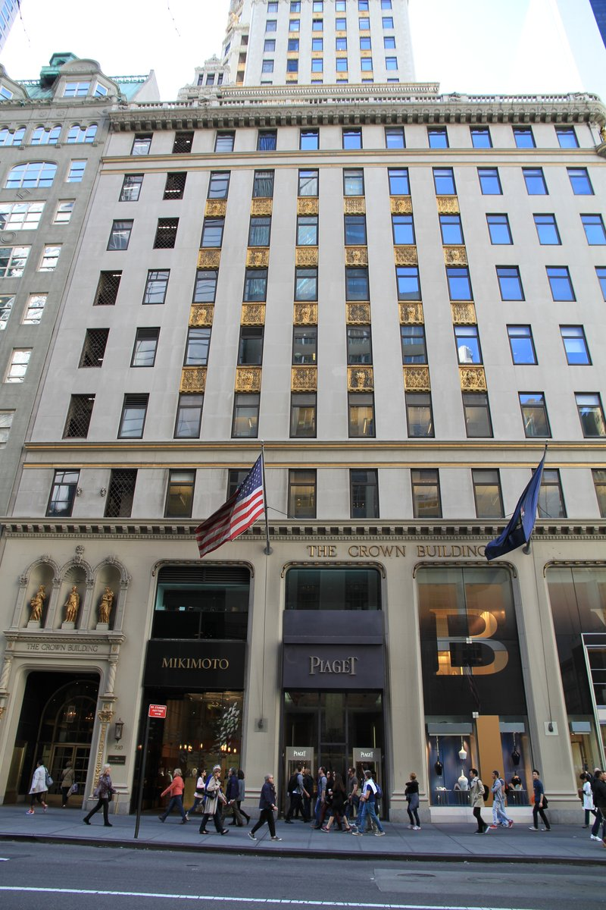
Aman New York
New York, United States
83 suites fill the Crown Building on Fifth Avenue, and there isn't a standard room in the building — the smallest suite still runs a soaking tub and Aman's signature minimalist design. The three-floor spa has two indoor pools and a jazz lounge, deliberately built to feel nothing like Manhattan.
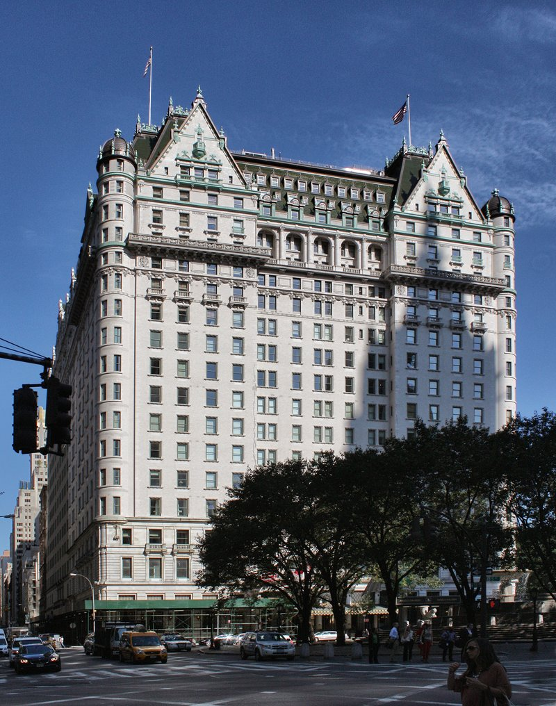
The Plaza
New York, United States
282 rooms at the corner of Fifth Avenue and Central Park South since 1907, designated a National Historic Landmark in 1986. The Palm Court serves afternoon tea under a stained-glass ceiling, and the Oak Bar's dark-paneled interior has been a power-lunch institution for over a century. The fictional Eloise lived here in Kay Thompson's children's books — a painted portrait of her still hangs in the lobby. 24-karat gold fixtures throughout.
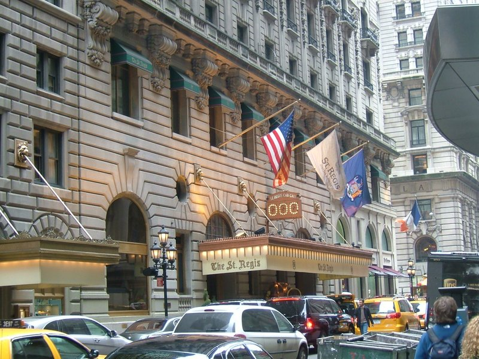
The St. Regis New York
New York, United States
238 rooms on East 55th and Fifth Avenue since 1904, built by John Jacob Astor IV — who died on the Titanic eight years later. The King Cole Bar is the birthplace of the Bloody Mary (originally called the Red Snapper when it arrived from Paris in 1934), and the Maxfield Parrish mural behind the bar has hung in the same spot since opening day. Butler service is standard in every room — the St. Regis invented the concept of hotel butlers.